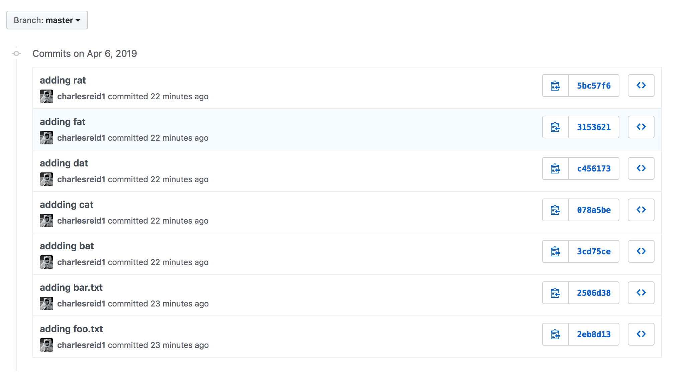

git-commit-ectomy
Perform a git-commit-ectomy to forever remove problematic commits from your repo history.
This uses the git-forget-blob.sh script from @nachoparker.

requirements
This guide utilizes GNU xargs. You should run it on Linux, or use Homebrew's gxargs if on a Mac.
demo surgery
Clone an example repo for performing surgery:
$ git clone https://github.com/charlesreid1/git-commit-ectomy-example
how to make a fat file
Use dd to create files by assembling
a specified number of bits.
For example, to create a 10 MB file:
$ dd if=/dev/urandom of=my_big_fat_file bs=1048576 count=10
Important: You must use /dev/urandom with a non-zero block size.
If you use /dev/zeros then each file will be identical and git
will not store them separately. Then your surgery will go very badly.
Note: 1048576 = 2^20 bytes comes from
1 KB = 2^10 bytes, and 1 MB = 2^10 KB,
for a total of 2^20 bytes per megabyte.
count = 10 means we make 10 1mb blocks.
make several fat files
Crank them out. bat cat dat fat rat!
dd if=/dev/urandom of=bat bs=1048576 count=10
dd if=/dev/urandom of=cat bs=1048576 count=10
dd if=/dev/urandom of=dat bs=1048576 count=10
dd if=/dev/urandom of=fat bs=1048576 count=10
dd if=/dev/urandom of=rat bs=1048576 count=10
Make sure they are the correct size:
$ ls -lhg
-rw-r--r-- 1 staff 10M Apr 10 18:30 bat
-rw-r--r-- 1 staff 10M Apr 10 18:30 cat
-rw-r--r-- 1 staff 10M Apr 10 18:30 dat
-rw-r--r-- 1 staff 10M Apr 10 18:30 fat
-rw-r--r-- 1 staff 10M Apr 10 18:30 rat
Also make sure they are unique (hence /dev/random and not /dev/zero):
$ for i in `/bin/ls -1 *at`; do
md5 ${i}
done
MD5 (bat) = 140c7d1e5a12c0eb2fefd5529250a280
MD5 (cat) = 9345ca4033c7e42fb009e3b8014570dc
MD5 (dat) = fadc3114fe9a70f688eba0db4e0dc7a9
MD5 (fat) = 39e98200043e438f9070369989b2d964
MD5 (rat) = 77b1c3077041078fd1f371b1bb7dd6e4
commit files
Add the files to the repo in separate commits:
for item in bat cat dat fat rat; do
git add ${item} && git commit ${item} -m "Adding ${item}"
done
git push origin master
I also added two dummy files foo.txt and bar.txt
to illustrate the impact of the surgery on
commit history.
Now you should see everything in the commit history:
Locally in git log:
$ git log --oneline
fd76938 Add bar.txt
8a86eaf Add foo.txt
c50a272 Adding rat
423ede3 Adding fat
b56c10b Adding dat
beb8b4f Adding cat
84d894e Adding bat
prep for surgery
Use git-forget-blob.sh to forget the blob. Start by downloading it:
$ wget https://tinyurl.com/git-forget-blob-sh -O git-forget-blob.sh
$ chmod +x git-forget-blob.sh
If you are on a Mac, edit the file to change
2 occurrences of xargs to gxargs.
To use it:
./git-forget-blob.sh <name-of-file>
git rm
Start by checking the size of the repo:
$ du -hs .git
50M .git
Now remove dat using git rm:
$ git rm dat
$ git commit dat -m 'Removing dat'
$ git push origin master
This, of course, does not change the size of the repo. If we clone a fresh copy from Github, the size of the repo is still the same:
$ du -hs .git
50M .git
Git is cursed with perfect memory, and will not forget a large file that's been added to the repo.
git forget blob
We use git-forget-blob.sh to permanenty remove
dat from the repo history and rewrite all commits
since the file was added:
$ ./git-forget-blob.sh dat
Counting objects: 23, done.
Delta compression using up to 4 threads.
Compressing objects: 100% (22/22), done.
Writing objects: 100% (23/23), done.
Total 23 (delta 6), reused 0 (delta 0)
Rewrite 84d894e39d63bbea54a7b8d3d1c85c588adff7ae (1/8) (0 seconds pRewrite beb8b4f2fbb257c0d6098620de7a8df5d7dd74ed (2/8) (0 seconds pRewrite b56c10bafeb95eece9880aa1a52cfc3e4e99045e (3/8) (0 seconds passed, remaining 0 predicted) rm 'dat'
Rewrite 423ede37f4d75dbb7a1b8020c561c4d7a926a97f (4/8) (0 seconds passed, remaining 0 predicted) rm 'dat'
Rewrite c50a2724f6d722002133b04b0f63f271b861ff9c (5/8) (0 seconds passed, remaining 0 predicted) rm 'dat'
Rewrite 8a86eafbb5b669120fa1073cfa7567bbebf2fb2e (6/8) (0 seconds passed, remaining 0 predicted) rm 'dat'
Rewrite fd769386dcd32354bad57e8eb057ae8adb2b3c9b (7/8) (0 seconds passed, remaining 0 predicted) rm 'dat'
Rewrite d0587c525a5f64d02b1cb46c04261ab285c907f9 (8/8) (0 seconds passed, remaining 0 predicted)
Ref 'refs/heads/master' was rewritten
Counting objects: 20, done.
Delta compression using up to 4 threads.
Compressing objects: 100% (19/19), done.
Writing objects: 100% (20/20), done.
Total 20 (delta 6), reused 8 (delta 0)
Now check if it worked:
$ du -hs .git
40M .git
Success!
how it worked
If we check the git log we can see what happened - all commits involving dat were rewritten. Because git uses the prior commit's hash to make the next commit's hash, we will rewrite every commit since the first time dat was added to the repo:
New log:
$ git log --oneline
3c10144 Removing dat
6f7b8f2 Add bar.txt
3f70da5 Add foo.txt
5406c1a Adding rat
df458d0 Adding fat
5f6e932 Adding dat
beb8b4f Adding cat
84d894e Adding bat
Compare to the old log:
$ git log --oneline
d0587c5 Removing dat
fd76938 Add bar.txt
8a86eaf Add foo.txt
c50a272 Adding rat
423ede3 Adding fat
b56c10b Adding dat
beb8b4f Adding cat
84d894e Adding bat
Note that the "Add cat" commit IDs are identical,
but every commit after dat was added to the repo is changed.
This is because each commit ID is computed using the hash of the prior commit, so if we change one commit ID in history, we change all subsequent commit IDs.
stitch the patient back up
Of course, for surgeons, as for airline pilots, if the last step is screwed up, nothing else counts.
We asked git to forget a file, which it did, but that required modifying commits in the git history, which required re-calculating commit hashes.
At this point, we have two separate, parallel
master branches that split when our
file dat was added to the repo.
If we simply push our branch to the Github remote, we will have a huge headache: every commit will have a duplicate, the old branch and the new branch, and will show up side-by-side.
To do this correctly, we need to use the force when we push:
$ git push origin master --force
This will ensure that Github does not keep duplicate copies of all commits.
Here is a screenshot of the repo on github before
we ran git-forget-blob:

And a screenshot of the repo after:

tips for surgery
Size up your patient.
This one-liner lists the 40 largest files in the repo (modify the tail line to change the number):
$ git rev-list --all --objects | \
sed -n $(git rev-list --objects --all | \
cut -f1 -d' ' | \
git cat-file --batch-check | \
grep blob | \
sort -n -k 3 | \
\
tail -n40 | \
\
while read hash type size; do
echo -n "-e s/$hash/$size/p ";
done) | \
sort -n -k1
Get your patient some insurance. Back up any files you want to remove but keep.